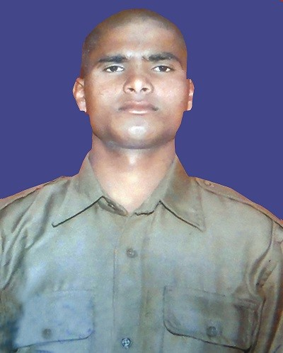

NAND RAM
RegtNo:- 070292187
Unit - 8 Bn
Address:- Vill-Hans Koti PO- Meeng Gadhera Teh- Thourdi, Distt- Chamoli (Uttarakhand)
Description of Incident:- Made the supreme sacrifice in Helicopter crash deployed in rescue operation in Kedar nath axis Gauri Kund and Kedar Nath, Uttarakhand
A village near Narayan Bagad, native to ITBP jawan Nand Ram, 27, killed in the June 25 chop chopper crash while on a rescue operation at kedarnath , continues to be cut off from the rest of Uttarakhand for the past two weeks, and it took five days for his body reach his village .”the body reached here on the 29th and it was straight to the cremation ground “, said the soldier’s elder brother , Ramesh Ram
Damaged rooads have cut off the supply of relief material for nearly 10,000 people living in different villages.”JHULA pul of Narayan Bagad was washed away marooning several villages . No restoration has started. Our biggest worry is that food vegetables and fuel, kerosene and diesels is finished in this area ,”said MC C handola, resident of Narayan Bagad.
On June 26 Ram's body was taken to Gauchar, then Dehradun for the guard of honour, and then brought back o Gauchar, to be taken to Narayan Bagad by road in Chamoli district. ITBP jawans carried the coffin on their
shoulders through stretches where roads were damaged. They then trekked to where a car was available for the onward journey. "My brother was posted in Leh and deputed at Gauchar for rescue. He was the sole bread earner for our family," said Ramesh.